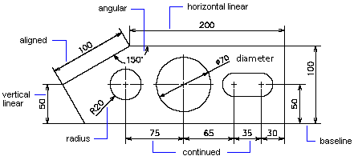

Dimensions show the geometric measurements of objects, the distances or angles between objects, or the X and Y coordinates of a feature.
AutoCAD provides three basic types of dimensioning:
Linear dimensions include aligned, rotated, and ordinate dimensions.

You can create dimensions for lines, multilines, arcs, circles, and polyline segments, or you can create dimensions that stand alone.
AutoCAD draws dimensions on the current layer. Every dimension has a dimension style associated with it, whether it's the default or one you define. The style controls characteristics such as color, text style, and linetype scale. Thickness information is not supported. Style families allow for subtle modifications to a base style for different types of dimensions. Overrides allow for style modifications to a specific dimension.
This topic briefly defines the parts of a dimension.
The dimensioning system variables control the appearance of dimensions.
Dimension text refers to any kind of text associated with dimensions, including measurements, tolerances (both lateral and geometric), prefixes, suffixes, and textual notes in single-line or paragraph form.
A default leader line is a straight line with an arrowhead that refers to a feature in a drawing.
Associative dimensions automatically adjust their locations, orientations, and measurement values when the geometric objects associated with them are modified.